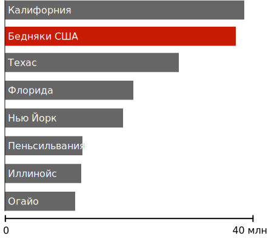

Nezměrné bohatství
Z původního Wealth Shown To Scale přeložil a upravil kerray.
Možná by šlo vedle amerických reálií doplnit i naše a evropské - můžete se o to pokusit i sami a poslat pull request, stejně tak když najdete nějakou chybu.
Přibyla aktualizace částek, bohatí jsou po roce covid-19 krize zase o hodně bohatší, a přibyl argument na nejčastější námitku "ale oni ty peníze nemají v hotovosti, ale jako akcie".
Ať už Vás tento pohled provokuje nebo ve Vás rezonuje, pokud jste ochotní zvažovat i jiné, širší úhly pohledu, než jaké jsou v našich médiích dnes běžné, mohl by Vás zajímat subreddit /r/cesky, případně rovnou vlákno k této stránce.
1 tisíc dolarů
63 179 dolarů (Medián příjmu domácnosti v USA)
1 milion dolarů
1 miliarda dolarů
200 miliard dolarů (majetek Jeffa Bezose)
Haha, to byl vtip, jsme sotva ve třetině cesty. Ale pokračujte v posouvání, ještě tu toho uvidíte víc.
Ale i bohatství těch nejbohatších bledne ve srovnání s nepochopitelným bohatstvím nejbohatších 0.0001% lidí.
Tito lidé se mohou vidět jako velmi bohatí, a často se staví proti opatřením zaměřeným na snížení nerovnosti.
Ale většinou jen vůbec nepochopili, jak velká propast zeje mezi nimi a superbohatými.
Mohli bychom žít ve světě, ve kterém existují bohatí, bez toho, abychom odevzdávali téměr všechny peníze superbohatým.
Žádný člověk nepotřebuje ani si nezaslouží takové bohatství.
400 nejbohatších Američanů (3,5 bilionu dolarů)
Bilion dolarů je tak velké číslo, že byste klidně mohli říct "stosmdesát gadžilionů zilionů dolarů." V této části tedy zkusíme pochopit velikost tohoto čísla a podíváme se, čeho by se za různé části této sumy dalo dosáhnout.
Jak budeme pokračovat, mějte na paměti, že všechno toto bohatství je pod kontrolou tak malé skupiny lidí, že by se vešli do jednoho Boeingu 747 — a ještě by 260 volných sedadel zbývalo.

Co by se dalo udělat s méně než 3 % těchto peněz?
Otestovat každého Američana na koronavirus
V době, kdy tvoříme tuto stránku, testování na covid-19 v USA nestačí ani zdaleka na to, aby šlo po karanténě znovu otevírat ekonomiku. Podle některých odhadů by asi 30 milionů testů za týden stálo kolem 100 miliard dolarů celkem, tedy asi 3,8 % bohatství aktuálně ovládaného 400 nejbohatšími Američany.
Úplné vymýcení malárie
Malárie je jedna z nejhorších infekčních chorob, které lidi postihují, a nejspíše má na svědomí víc úmrt než jakákoli jiná infekční nemoc v historii. Jen ve 20. století zabila malárie víc lidí než mor celkem.
Koronavirus nám všem ukázal, jakou hrůzu taková smrtící choroba přináší. Bohužel pro velkou část světa byla taková hrůza normální součástí denního života i před koronavirem.
Všem těmto úmrtím by se dalo zabránit. Předcházení malárii a její léčba je dobře prozkoumaná vědecká oblast, a v rozvinutém světě běžně používaná.
Odhadujeme, že malárie by mohla být zcela vyhlazena do roku 2030 za cenu asi 1,84 dolaru na každou rizikovou osobu za rok, tedy celkem asi 100 miliard dolarů. To jsou asi 2,8 % bohatství aktuálně vlastněného 400 nejbohatšími Američany.
Zhruba 800 dětí dnes zemře na malárii. Malá skupina superbohatých by tomu mohla zabránit za sumu tak malou, že by si nejspíš ani nevšimli, že ji nemají. Ale vybírají si možnost to neudělat.
Co bychom mohli udělat s méně než 5 % těchto peněz?
Darovat každé americké domácnosti 1 200 dolarů.
Podpůrný balíček nedávno schválený americkým kongresem (1 200 dolarů) patří mezi největší kdy schválené. Bude financován na dluh, který si pak jako daňoví poplatníci poneseme po generace. Nicméně zátěž splácení této podpory by mohla okamžitě zcela zmizet, kdyby na superbohaté byla uvalena daň tak malá, že by si jí ani nevšimli.
Bohatství nejbohažších 400 Američanů mohlo zaplatit celý tento balíček CARES, včetně finanční pomoci pro firmy, rozšířené podpory v nezaměstnanosti, a rozšířeného testování—a pořád by zbýval víc než bilion a půl dolarů.

Místo toho tuto cenu budou splácet všichni daňoví poplatníci.
Ukončit chudobu v Americe.
Obyvatelstvo států v USA ve srovnání s chudými v r. 2019
Jeden každý člověk v Americe by mohl být vyzvednut nad hranici chudoby jednorázovou dotací ve výšce zhruba 10 tisíc dolarů na rodinu (a asi 7 tisíc dolarů na chudé jednotlivce). Celková cena za to by byla 170 miliard dolarů, méně než 5 % bohatství, ovládaného 400 jednotlivci.
Může se zdát pochybné, že by jednorázová dotace mohla trvale pomoci s chronickou chudobou. Jedna z překvapujících pravd o chudobě ale je, že to není trvalý stav. Američané během života často přecházejí přes hranici chudoby nahoru i dolů, a jeden dobrý rok může mít masivní a dlouhotrvající dopad.
Myšlenka, že jednorázový převod hotovosti může natrvalo přeměnit lokální ekonomiku je podporována spoustou dat z výzkumů. Když se k lidem dostanou peníze, investují je do své budoucnosti. Můžou si dovolit vysokou školu, kupují si dopravní prostředky, platí za péči o děti, splácí neúnosné dluhy a dělají celou řadu dalších věcí, které zlepšují jejich karierní a finanční vyhlídky.
V USA se ze všech lidí, kteří každý rok uniknou chudobě, udrží nad hranicí chudoby polovina z nich aspoň 5 následujících let. Zhruba třetina je z chudoby venku i o deset let později.
Nebylo by to trvalé řešení pro všechny Američany. Mnozí by jistě opět rychle do chudoby upadli, a další čelí dluhům tak vysokým, že ani dotace by s tím mnoho nezmohla. Ale bavíme se o desítkách milionů Američanů, kterým by taková událost zcela změnila život. Takový krok by definoval celou generaci sociálních programů, a přetvořil by americkou ekonomiku na desítky let dopředu.
Co bychom dokázali i jen s méně než 6 % této sumy?
Vrátit daně za 2018 všem domácnostem s ročním příjmem pod 80 tisíc dolarů
V roce 2018 se celková federální daň od domácností, které vydělávají méně než 80 tisíc dolarů za rok, pohybovala kolem 200 miliard dolarů. Tyto peníze—odebrané zcela od chudých a střední třídy—by se daly vrátit za nepatrný zlomek bohatství, ovládaného nejbohatšími .0001 %.
Co bychom mohli udělat s méně než 7 % těchto peněz?
Zajistit čistou pitnou vodu a přístup k toaletám pro každého člověka na Zemi.
Kolem 844 milionů lidí nemá přístup k jakékoliv pitné vodě. Podobné číslo nemá přístup k jakýmkoliv záchodům ani latrínám, a proto prostě vyměšují někde venku.

Žádná pitná voda
Kontaminovaná voda je jedním z hlavních zdrojů nemocí, včetně cholery, úplavice a tyfu. Odhaduje se, že kontaminovaná voda zabíjí zhruba 829 tisíc lidí každý rok, což z ní dělá jednoho z hlavních světových zabijáků. Cena za poskytnutí čisté vody a možnosti zbavit se odpadu pro každého na Zemi je zhruba 240 miliard dolarů, tedy asi 6,8 % bohatství ovládaného nejbohatšími čtyřmi sty Američanů.
Co by se dalo dosáhnout se třetinou těchto peněz?
Dát 10 tisíc dolarů každé americké domácnosti
Jako Američané debatujeme jak a kdy znovu otevřít ekonomiku po koronaviru, a často je nám předkládána zdánlivě nemožná volba mezi riskováním milionů životů a sklouznutím do velké ekonomické krize kvůli trvající karanténě. Je to odpudivá lež.
Peníze, pomocí kterých můžeme tuto bouřit přestát a přitom zachovat karanténní opatření, existují, jen by bylo potřeba najít politickou vůli si je vzít.
Co by se dalo dokázat s 70 % těchto peněz?